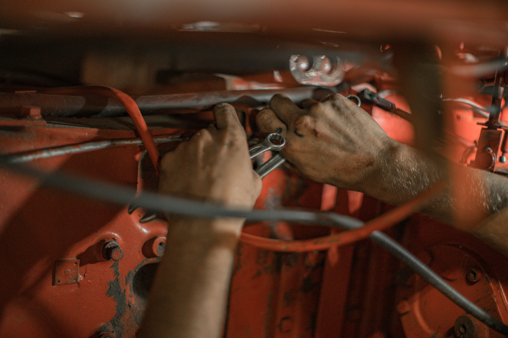

Preventive Maintenance
Routine maintenance helps reduce avoidable issues and supports long-term vehicle reliability. This includes service planning, inspections, and care that helps vehicles stay in strong working condition.
Professional Support • Practical Solutions • Reliable Service
At Penguin Auto Specialists, our services are centered on helping customers make informed decisions about their vehicles. We focus on dependable care, organized recommendations, and support that helps drivers stay safe and road-ready.

Core Services
We provide practical automotive support with a focus on reliability, safety, and long-term performance. Our goal is to make every service experience feel clear, professional, and worthwhile.
Routine maintenance helps reduce avoidable issues and supports long-term vehicle reliability. This includes service planning, inspections, and care that helps vehicles stay in strong working condition.
Clear evaluations and careful system checks help identify concerns accurately. Diagnostics support better decision-making and allow repair needs to be addressed more efficiently.
We focus on dependable service guidance and repair support that helps customers feel informed, respected, and confident in the care their vehicles receive.

Diagnostics and Evaluation
Vehicle concerns can be frustrating when the cause is unclear. That is why diagnostics and inspections play such an important role in the service process. Clear evaluation helps identify problems more accurately and supports more effective repair planning.
Maintenance and Repair Support
Routine maintenance and repair support are essential for drivability, safety, and overall vehicle performance. Our approach focuses on useful service, organized communication, and support that helps customers stay ahead of larger issues.

Need Service Guidance?
Whether you need routine maintenance, diagnostic support, or general repair guidance, our goal is to provide dependable service that feels organized, clear, and customer-focused.